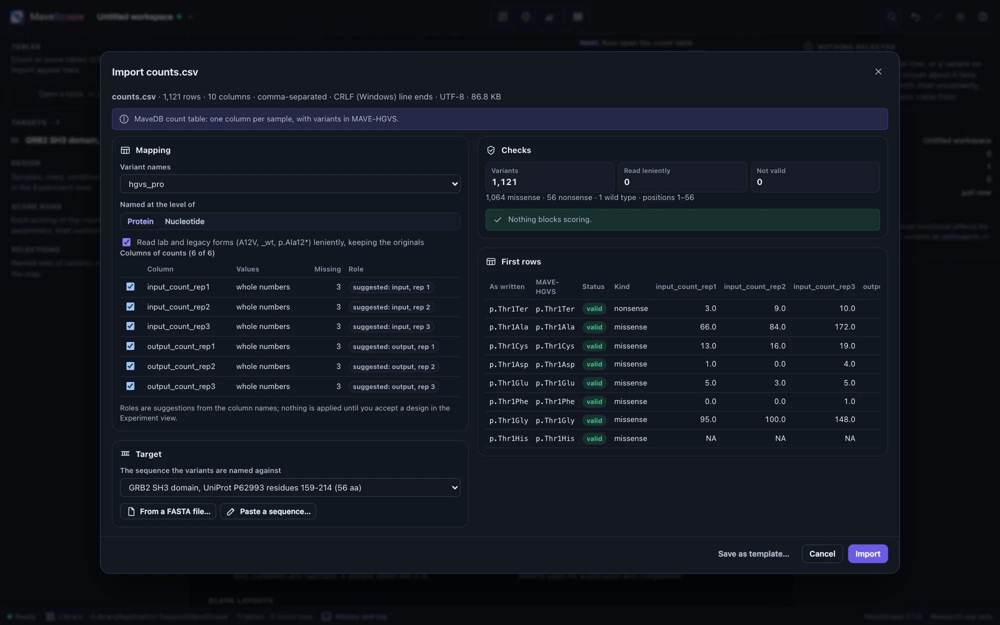
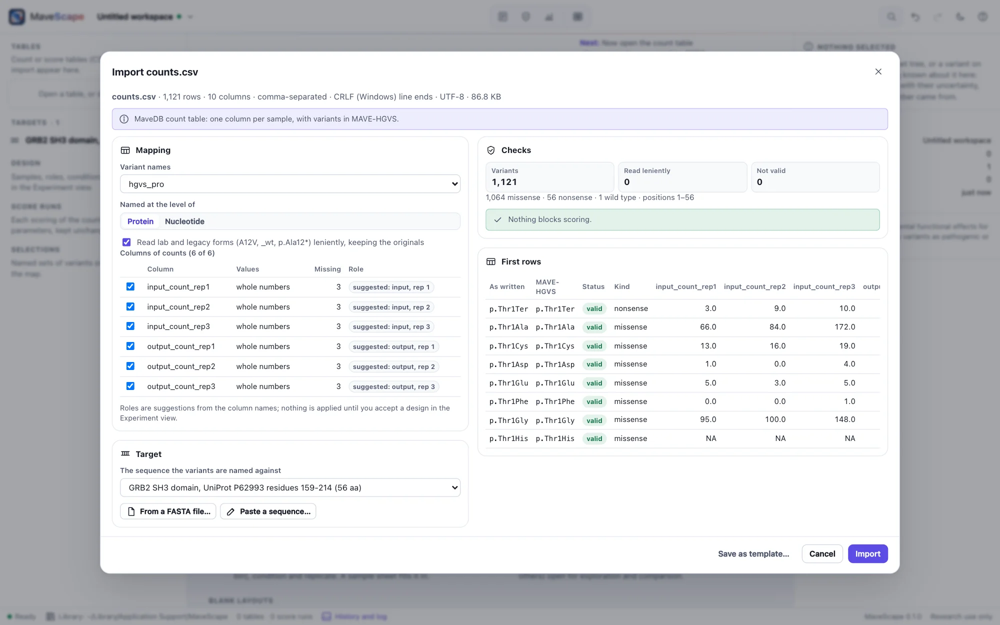

Opening your data
An analysis needs three things: the counts, the sequence the variants are named against, and the design that says which column is which sample. This page covers the first two; the next, the design.
What to bring
- Variant counts: a table with one row per variant and one column per sequenced sample (CSV, TSV or Excel), as Enrich2, DiMSum, dms_variants or a lab's own scripts write them, or one file per sample.
- The target sequence the variants are named against: a FASTA file, protein or DNA.
- The design: which column is which sample, replicate and time point. MaveScape drafts it from the column names, or reads it from a sample sheet (The design).
Open the files from the start page, the workspace menu (⌘O), by dropping them on the window, or by naming them on the command line. Open the table and its FASTA together: sequences are read first, so the table finds its target.
hgvs_pro,input_rep1,output_rep1,input_rep2,output_rep2
p.=,52011,61873,48320,57112
p.Ser2Val,812,640,775,591
p.Ser2Ter,905,12,880,9
p.Lys3Pro,488,NA,502,33The import wizard


The wizard shows what MaveScape found: the layout, the column of variant names and its level, the columns of counts with the roles their names suggest, the target, and the checks. Correct anything it got wrong, then Import; Save as template remembers the mapping for the next table with the same columns. Nothing is coerced silently: problems that block scoring (the same variant on two rows, counts that are not numbers or are negative, rows of the wrong width) are listed by line.
| Layout | How it is recognized |
|---|---|
| MaveDB count table | accession (MaveDB's downloads), or all of hgvs_nt, hgvs_splice and hgvs_pro (its upload layout, and MaveScape's own exports), with sample columns |
| MaveDB score table | The same identifier columns and score |
| DiMSum | A nt_seq column of whole nucleotide sequences, named by comparing each with the wild-type DNA you give as the target |
| Generic | Any column of variant names, and numeric columns |
| One file per sample | Several files opened together, each a variant column and a count column, joined on the variants |
Variant names
Names are MAVE-HGVS, MaveDB's nomenclature: p.Ala12Val, p.Ala12Ter, p.Ala12= (synonymous), p.= (the wild type), p.[Ala12Val;Lys14Arg], and c.34C>T at the nucleotide level. Lenient reading, the default, also takes lab and legacy forms (A12V, p.A12V, p.Ala12*, _wt, _sy) and keeps each as written beside its MAVE-HGVS form. Every name is checked against the target: one that disagrees with it (another residue at that position, or a position beyond the target) is not scored, and says why.
Missing is not zero
An empty cell or NA (also N/A, NaN, null, None) is missing: the variant was not counted in that sample, and is not scored in that replicate. Write 0 only for a variant counted zero times. Some tables write variants that dropped out during selection as missing; quality control's "Missing after selection" finding says when that happens.
The target
A FASTA file of the protein or DNA sequence the variants are named against. Positions are numbered from 1 on the target; an offset, set in the Experiment view, numbers them on the reference too (an offset of 158 makes position 1 residue 159), and the map shows both. For DNA named at the protein level, the coding start can be set.
>grb2-sh3 GRB2 SH3 domain, UniProt P62993 residues 159-214
TYVQALFDFDPQEDGELGFRRGDFIHVMDNSDPNWWKGACHGQTGMFPRNYVTPVNEvery file
FORMATS.md describes every file MaveScape reads and writes, and the start page has blank layouts to fill in.